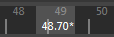

在 Maya 中设置时间码
您可以在 Maya 中的几个位置设置场景时间码：
为新场景设置帧速率。
- 单击 >
 。
。
- 使用“新建场景选项”(New Scene Options)的“默认工作单位”(Default Working Units)区域中的“时间”(Time)设置来设置场景的帧速率。
注： 帧速率随与文件一起保存，并将显示在下一步您将其打开。
将当前场景切换到时间码格式
- 打开首选项设置。
- 从“时间显示”(Time Display)选项中选择“时间码”(Timecode)。
这将为场景设置时间码。它不会更改整体 Maya 默认值。
注： 在时间滑块中，已舍入到小数点后第二位的任何数字旁边会显示一个星号“*”，指示该值是近似值。如果在“时间码”(Time Code)与“帧”(Frames)之间切换，或者如果在“时间滑块”(Time Slider)首选项中禁用“捕捉到整个帧”(Snap to Whole Frames)选项，有时会出现这种情况。

在 Maya 中显示时间码
您可以在 Maya 中的几个位置显示场景时间码：
在场景视图中显示时间码
- 从“平视显示仪 (HUD) 选项”(Heads Up Display (HUD) options)中选择“场景时间码”(Scene Timecode)。
时间码将显示在当前视图的右下角。
在“时间滑块”(Time Slider)和“范围滑块”(Range Slider)上显示时间码
- 转到 https://beehive.autodesk.com/community/service/rest/cloudhelp/resource/cloudhelpchannel/guidcrossbook/?v=2025&p=MAYAUL&l=CHS&accessmode=live&guid=GUID-51A80586-9EEA-43A4-AA1F-BF1370C24A64 或 “动画控件”(Animation Controls)菜单的“时间显示”(Time Display)区域。
- 启用“时间标记和播放范围上的时间码”(Timecode on Time Marker & Play Range)。
时间码将显示在“时间滑块”(Time Slider)和“播放范围”(Play Range)中。